История
Fira Sans — это бесплатный гуманистический гротеск. Шрифт создали в 2013 году по заказу Mozilla. Разработкой руководил известный типограф Эрик Шпикерманн. Главная цель проекта — идеальное отображение текста на экранах.
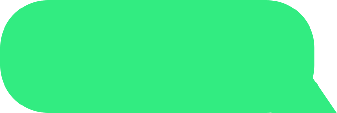
( . ❛ ◡ ❛ . )
Год стал точкой отсчета, когда Mozilla и Эрик Шпикерманн выпустили шрифт в мир, навсегда изменив стандарты бесплатной веб-типографики.
Начертаний в одном семействе дают дизайнеру полную свободу для построения визуальной иерархии в интерфейсе
18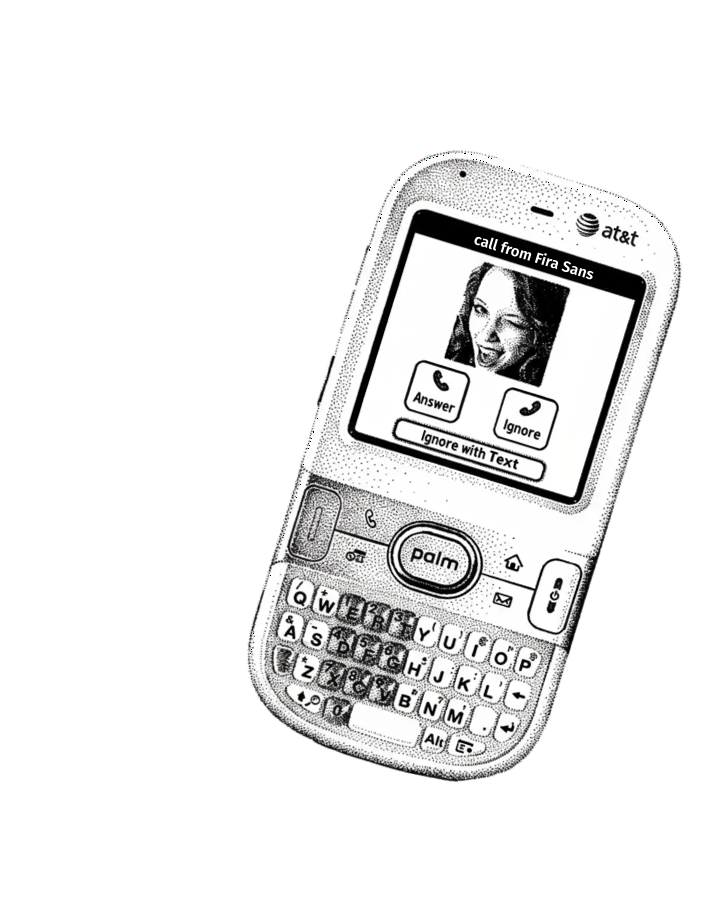
Т9 НЕ ИСПОРТИТ НАПИСАННОЕ FIRA SANS
Т9 НЕ ИСПОРТИТ НАПИСАННОЕ FIRA SANS
Т9 НЕ ИСПОРТИТ НАПИСАННОЕ FIRA SANS
Т9 НЕ ИСПОРТИТ НАПИСАННОЕ FIRA SANS
Т9 НЕ ИСПОРТИТ НАПИСАННОЕ FIRA SANS
Объявляю black italic войну black: юзер regular Эдик light ещё extra bold italic раз extra bold
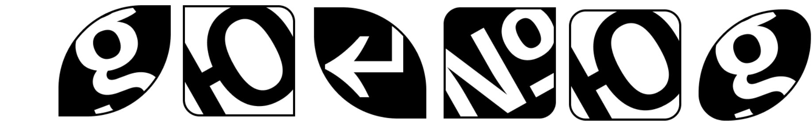
Q n g g y• горка
• качели
• труба
• окошко
плюща italic щёки thin от thin italic злости bold italic , хамит light italic в чате extralight
Важная черта графики шрифта Fira Sans — различение похожих знаков, что критично для безопасности интерфейсов.
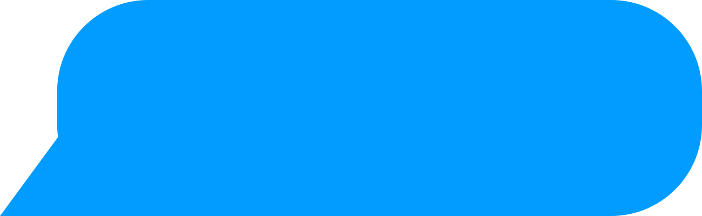
\ (o_o) /
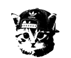
слова bold , а шрифт-то medium italic ни при чём medium — выучи extra bold буквы thin
Mam bezplatnu licencu.
Ой, не переключил раскладку, это верхнеплужский!
У Fira Sans в запасе есть много редких языков
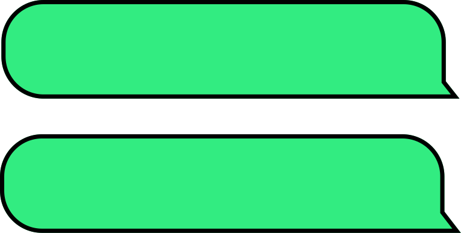
লাইসেন্স ডাউনলোড करें
ดาวน์โหลดใบอนุญาต
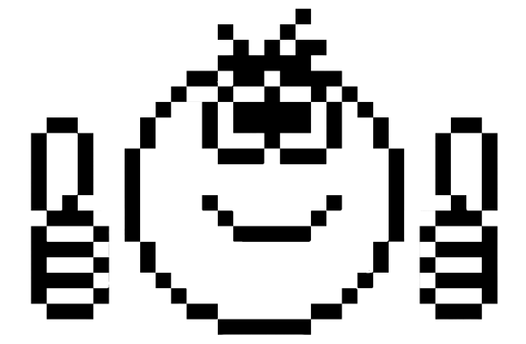

הורדת הרישיון
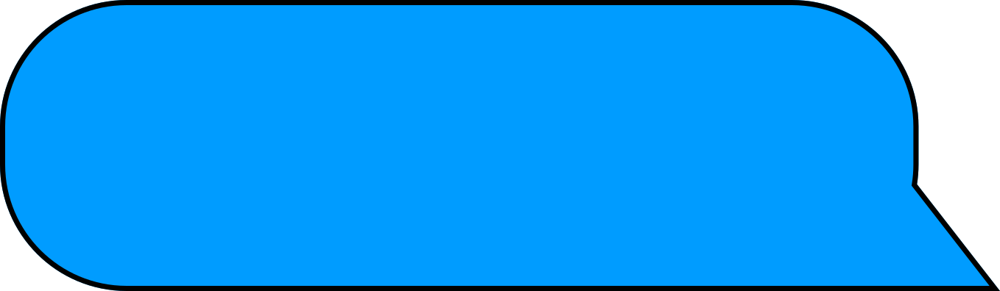
ふぃらさんす?
はい！！！
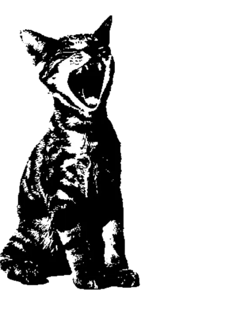
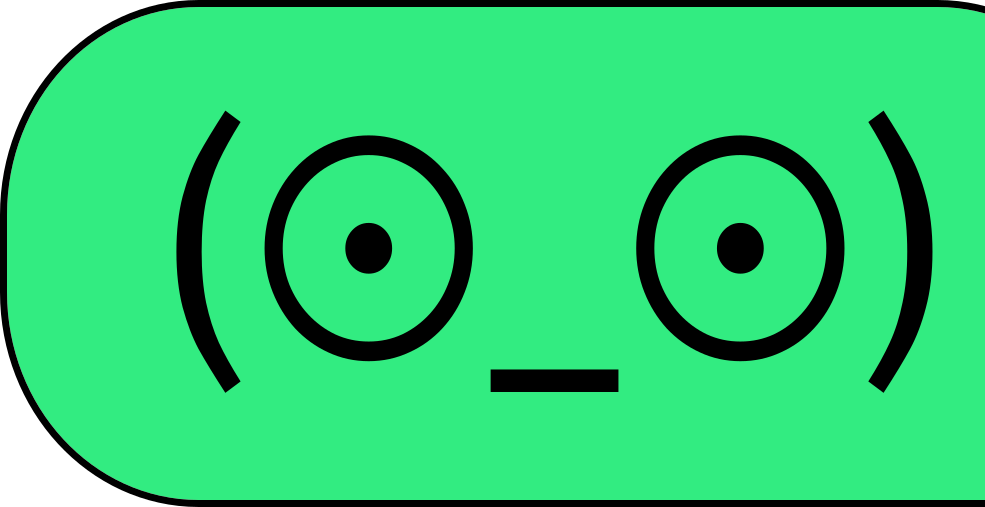
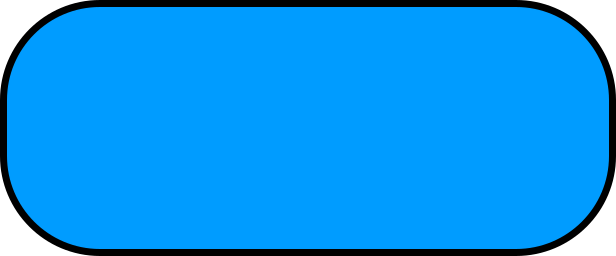
В общем скачивай мою лицензию и пиши мне с мобильника, в котором всегда будет твой личный Fira Sans! Я буду ждать встречи уже на твоем экране.

&^%#27%@!
Fira Sans!
@*$*^$((&^
@^$(!!!
пока-пока!
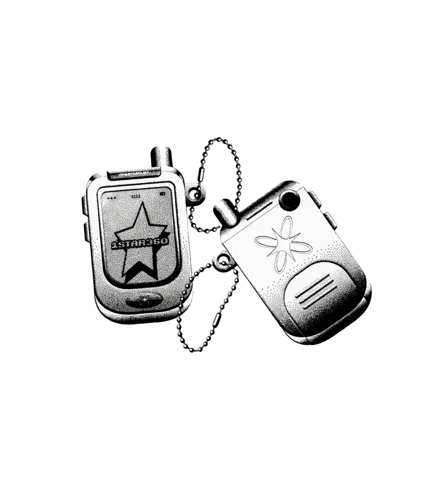
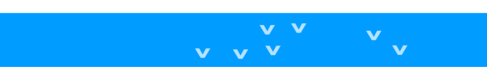
От Нины Рахмановой с любовью
к Fira Sans
БП26ДЗ07
курс 1